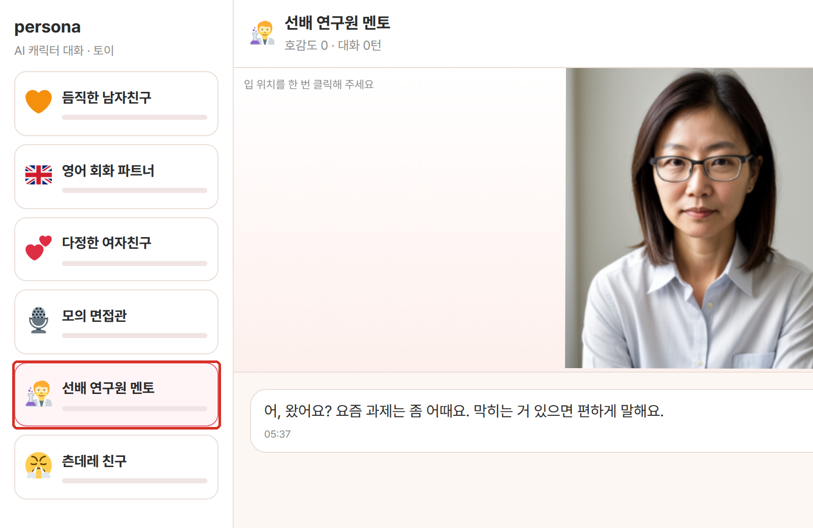
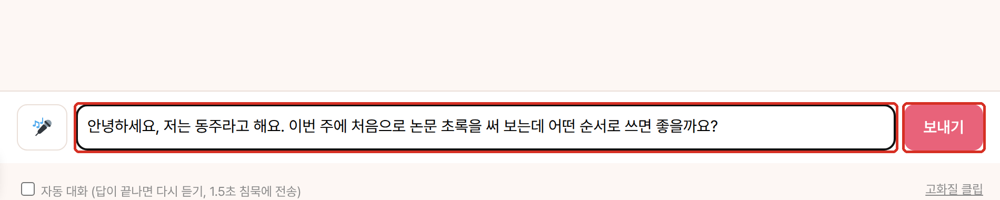
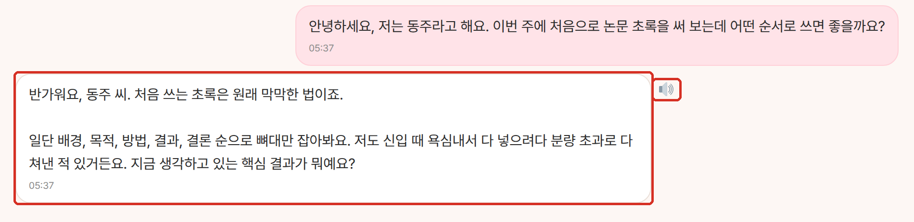
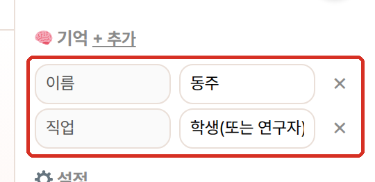

에이전트 포털 사용 설명서
인공지능응용연구실 · 2026. 10. 12. · 내부 시험용 · 배포용 아님
연구실 서버에서 돌아가는 도구 25개를 한 화면에서 찾아 씁니다. 도구마다 쓰는 순서를 화면으로 정리했습니다.
- 포털에이전트 포털
- 문서Humanize KR · 한국어 문장 다듬기
- 문서kordoc · 공문서 읽기·초안 HWPX
- 문서Notebook · 출처 기반 질의·노트
- 문서Writer · 건배사·경조사·공지문
- 문서메일 · 업무 메일 작성·회신·윤문
- 문서상장 생성기 · 상장·표창장·감사장
- 문서논문 리뷰 · 투고 전 사전 심사
- 문서주간보고 · 개인 작성 · 실(소본부) 취합 · HWPX/DOCX
- 문서글쓰기 코치 · 준실시간 첨삭
- 회의Meeting · 회의 녹음 회의록
- 음성TTS · 한국어 음성 합성
- 그림Diagram · 말로 그리는 다이어그램
- 그림Sketch · 손그림을 figure로
- 그림CAD Agent · 로컬 CAD 초안·검증
- 그림그림 생성 · 말로 그리기 · 말로 고치기 (Qwen-Image)
- 데이터SQL (demoDB) · 자연어 데이터 질의 (demoDB: 가상 데이터)
- 데이터그래프 · 표 → 다중 후보 → 편집 가능한 문서
- 데이터그래프 디지타이저 · 논문 그래프 그림에서 데이터 뽑기
- 연구단백질 구조 예측 · 구조·결합 친화도·서열 설계
- 연구배터리 · PyBaMM 리튬이온 셀 성능·수명 예측
- 원자력차폐 계산기 · 방사선 차폐·선량 간이 계산
- 재미팀 밸런스 맵 · 사주·MBTI 궁합
- 토이Persona · AI 캐릭터 대화 (토이)
- 토이Avatar · 가상 캐릭터 그림·말하기·움직이기 영상
- 토이파동이 · 3D·2D 캐릭터 리그
포털
에이전트 포털
로그인한 뒤 로컬 LLM 도구를 검색·분류로 찾아 한 주소에서 엽니다.

아이디와 PIN을 넣고 로그인합니다. 처음이면 처음이에요 (가입)에서 만듭니다.

검색창에 하고 싶은 일을 쓰고 Enter.

카테고리 칩으로 범위를 좁힙니다.

카드에서 열기로 도구로 들어갑니다.

도구 화면 오른쪽 위 ?로 사용법을 봅니다.

문서
Humanize KR
한글 문장을 다듬고 원문과 바뀐 곳을 보여 줍니다.
총 12건의 문서를 검토했으며, 이 과정에서 날짜 표기의 통일이 필요하다는 점을 확인했습니다.
보고자: 김동주 석사후연수생 / 인공지능응용연구실
보고자: 김동주 석사후연수생 / 인공지능응용연구실
글을 붙여 넣고 장르와 경로를 고른 뒤 윤문을 누릅니다.

변경 비교에서 바뀐 문장을 확인합니다.

윤문 결과를 읽고 결과 복사를 누릅니다.

문서
kordoc
문서를 요약하거나 질문에 답하고, 공문서 초안을 HWPX로 만듭니다.
작성자: 인공지능응용연구실 김동주 석사후연수생
기간: 2026. 10. 5.~10. 9.
대상: 가상 문서 12건
수행: 파일명 통일, 날짜 표기 점검
Ⅲ. 개선방안
- 기간: 2026. 10. 5. ~ 10. 9.
- 대상: 가상 문서 12건
Ⅴ. 행정사항
- 향후 계획: 2026. 10. 12. 안내문 배포 예정
- 작성자: 인공지능응용연구실 김동주 석사후연수생
작업에서 공문서 초안 → HWPX를 고르고 프리셋 보고서를 고릅니다.

작성자와 작성할 내용을 적고 실행을 누릅니다.

초안을 읽고 보고서.hwpx 내려받기를 누릅니다.

문서
Notebook
출처를 모아 질문하고 답변의 근거 문단을 확인합니다.
대상: 가상 문서 12건
담당자: 김동주 석사후연수생(인공지능응용연구실)
안내문 배포: 10월 12일
질문: 시범운영 담당자와 안내문 배포일은 언제인가요? 예산도 알려주세요.
+ 새로로 노트북을 만들고 글 붙여넣기로 출처를 넣습니다.

출처에 대해 묻고 질문을 누릅니다.

답변의 인용 번호를 눌러 근거 문단을 확인합니다.

문서
Writer
글의 종류를 고르고 필요한 내용을 넣으면 문안을 만듭니다.
내용: 가상 문서 12건의 파일명과 날짜 표기를 점검합니다. 문의: 김동주 석사후연수생(인공지능응용연구실)
일정: 2026. 10. 13.(화) ~ 10. 16.(금)
대상: 시범운영 참여자
요청: 10. 16.까지 수정 의견 전달
시범운영 참여자분들은 2026. 10. 13.(화)부터 10. 16.(금)까지 가상 문서 12건의 파일명과 날짜 표기를 점검해 주세요. 문의는 인공지능응용연구실 김동주 석사후연수생에게 하시면 됩니다. 10. 16.(금)까지 수정 의견을 전달해 주시기 바랍니다.
공문에서 사내 공지문을 고릅니다.

제목·내용·일정·대상을 적고 생성을 누릅니다.

1안과 2안을 비교하고 복사를 누릅니다.

문서
메일
요점을 넣어 업무 메일을 작성하거나 받은 메일에 회신을 만듭니다.
요청: 안내문 초안 검토와 수정 의견
마감일: 2026. 10. 14.
배포 예정일: 10월 16일
보내는 사람: 김동주 석사후연수생 / 인공지능응용연구실
박OO 과장님, 안녕하십니까.
인공지능응용연구실 김동주입니다.
…
일정에 맞추어 진행될 수 있도록 10월 14일(수)까지 회신 주시면 감사하겠습니다.
--
김동주 석사후연수생 | 인공지능응용연구실
gggg8657@gmail.com
받는 사람을 적고 목적을 고릅니다.

핵심 내용과 마감일을 적습니다.

보내는 사람·서명을 한 번 채우고 메일 작성을 누릅니다.

제목을 고르고 본문을 확인한 뒤 제목+본문 복사를 누릅니다.

문서
상장 생성기
디자인과 수상 내용을 넣어 상장·표창장·감사장을 만듭니다.
받는 분: 경영지원팀 박OO 과장
기관: 인공지능응용연구실
수여자: 교육 담당 김동주
번호: 2026-003

디자인과 상훈 종류를 고릅니다.

수상자와 수상 문구를 적습니다.

수여 일자·기관·수여자를 적고 직인을 고릅니다.

미리보기를 확인하고 PDF 내려받기를 누릅니다.

문서
논문 리뷰
원고를 올리면 심사 지적과 원문 인용을 보여 줍니다.
저자: 김동주 (인공지능응용연구실)
초록: 검색 정확도 97.3%
결과: 검색 정확도 95.1%
표준편차와 신뢰구간은 계산하지 않았다.

원고를 올리고 읽어 들인 파일과 제목·저자를 확인합니다.

리뷰 설정을 고른 뒤 LLM 리뷰 시작을 누릅니다.

지적을 읽고 인용 문장을 누릅니다.

원문에서 표시된 문장을 확인합니다.

Markdown·DOCX·TXT 중 필요한 형식으로 받습니다.

문서
주간보고
이번 주 메모를 수행업무와 향후 계획으로 정리합니다.
10/12 교육 준비 회의, 일정·담당 확정
10/13~10/14 실습 예제 파일 점검
10/16 교육 안내문 배포
다음 주: 10/20 자료 정리 교육 (3층 세미나실)

작성자와 주차를 확인하고 메모를 적은 뒤 항목으로 정리 (LLM)를 누릅니다.

수행업무와 향후 계획의 과제명·기간·내용을 고칩니다.

미리보기를 확인하고 HWPX나 DOCX로 받습니다.

회의
Meeting
녹음 파일을 올리면 화자별로 분리해 받아쓰고 회의록과 액션아이템을 정리합니다.
화자1 00:00 인공지능 응용 연구실 김동주입니다. 화자2 00:13 교육은 다음 주 화요일 오후 2시입니다. 화자3 00:27 안내문 초안은 목요일까지 공유하겠습니다.
# 자료 정리 교육 준비 회의 ■ 참석자: 김동주, 박OO 과장, 이OO 선임 ■ 결정사항: 교육 화요일 14:00, 안내문 금요일 배포 ■ 액션아이템: 1. 안내문 초안·프로젝터 점검 (이OO 선임, 목요일) 2. 예제 파일 준비 (박OO 과장, 수요일)
녹음 파일을 올리고 화자 수를 넣은 뒤 1. 전사 + 화자 분리를 누릅니다.

재생 버튼으로 목소리를 확인해 화자 이름을 적고 제목·일시·장소를 입력합니다.

3. 회의록 생성을 누르면 안건별 논의 내용과 결정사항, 액션아이템이 정리됩니다.

인사이트 탭에서 안건별 핵심과 리스크를 확인하고 Markdown이나 HWPX로 받습니다.

음성
TTS
글을 넣으면 한국어 음성 파일로 만들어 줍니다.
읽을 글을 입력창에 적습니다.

속도와 파일 형식을 고르고 합성을 누릅니다.

플레이어로 듣고 내려받기로 저장합니다.

이전 합성 기록을 누르면 지난 결과를 다시 재생할 수 있습니다.

그림
Diagram
말로 설명하면 Mermaid 다이어그램을 그려 주고, 대화로 수정합니다.

유형을 고르고 그릴 내용을 설명합니다. 예시 버튼을 눌러도 됩니다.

그리기를 누르면 오른쪽에 다이어그램이 그려집니다.

대화창에 고칠 점을 쓰면 다시 그려 줍니다. 아래 Mermaid 소스를 직접 고쳐도 됩니다.

SVG나 PNG를 눌러 이미지로 저장합니다.

그림
Sketch
손그림 사진을 올리면 구조를 읽어 논문 스타일 다이어그램으로 다시 그립니다.


손그림 사진을 올리고 1. 읽기를 누릅니다.

읽은 글자와 연결을 확인해 틀린 곳을 고치고 2. 확인 → 방향 정하기를 누릅니다.

원본 그대로 재현 같은 그리는 방식을 고르면 스타일과 유형을 추천해 줍니다. 필요하면 바꾸고 4. 그리기를 누릅니다.

SVG나 PNG로 내려받습니다.

그림
CAD Agent
말로 3D 부품을 요청하면 모델과 도면을 만들고, 이어서 수정·파일로 받을 수 있습니다.

요청을 쓰고 실행을 누릅니다. 예시 버튼을 눌러도 됩니다.

3D 탭에서 모양을 돌려 보며 확인합니다.

도면 탭에는 3면도와 표제란이 들어간 부품도가 나옵니다.

같은 칸에 수정을 쓰면 새 리비전(R01…)이 생깁니다.

파일 탭에서 STEP·STL·DXF 등을 받습니다.

데이터
SQL (demoDB)
질문을 쓰면 SQL을 만들어 demoDB에서 표와 차트로 보여 줍니다.

왼쪽에서 테이블과 컬럼을 확인합니다. 설명을 적고 설명 저장을 누르면 질문할 때 반영됩니다.

궁금한 것을 문장으로 쓰고 질문을 누릅니다.

만들어진 SQL을 실행한 결과가 차트와 표로 나옵니다.

SQL 보기 / 수정 후 재실행에서 SQL과 차트 종류를 고쳐 재실행하거나 CSV 내려받기로 받습니다.

데이터
그래프
표를 넣으면 차트 후보를 그려 주고, 고른 차트를 수정 가능한 문서로 만들어 줍니다.
분기 웹 모바일 메신저 1분기 1,240 2,310 860 2분기 1,180 2,690 1,020 3분기 1,090 3,050 1,310 4분기 1,020 3,420 1,580
표를 붙여 넣고 표 읽기.

그래프 후보 만들기를 누르고, 마음에 드는 것에 문서에 담기를 체크합니다.

편집을 눌러 부제(출처), 종류, 색 등을 고칩니다.

파일 형식을 누르면 차트가 들어간 문서가 만들어집니다. 차트를 우클릭해 데이터 편집하면 값을 고칠 수 있습니다.

데이터
그래프 디지타이저
그림이나 PDF를 넣으면 그래프 값을 표로 만들어 줍니다.

| 정제 | 운송 | 채굴 | |
|---|---|---|---|
| EV-NCA 기존 | 14.51 | 3.68 | 2.85 |
| EV-NCA 순환 | 4.40 | 0.17 | – |
| Phone-LCO 기존 | 14.36 | 4.34 | 1.99 |
| Phone-LCO 순환 | 11.42 | 0.54 | – |
PDF를 올리고 그래프가 있는 쪽을 고른 뒤 이 쪽 불러오기.

찾아낸 그래프 중 하나를 누릅니다.

값을 읽은 자리가 원본 위에 표시됩니다. 맞는지 확인합니다.

이름을 정하고 CSV나 엑셀로 받습니다.

연구
단백질 구조 예측
아미노산 서열을 넣으면 3D 구조와 pLDDT·PAE를 GPU에서 계산합니다.
>Ubiquitin_human MQIFVKTLTGKTITLEVEPSDTIENVKAKIQDKEGIPPDQQRLIF AGKQLEDGRTLSDYNIQKESTLHLVLRLRGG

서열을 붙여 넣거나 예시 유비퀴틴을 고릅니다.

모드 빠름, 작업 이름을 적고 구조 예측 실행.

3D 뷰어에서 돌려 보며 신뢰도(pLDDT) 색을 봅니다.

점수를 확인하고 PDB 받기로 구조 파일을 받습니다.

연구
배터리
PyBaMM으로 방전·충전 곡선과 C-rate별 성능을 계산합니다.
방전 C-rate: 0.5, 1, 2

셀·모델·온도를 고릅니다.

방전 C-rate를 쉼표로 넣고 계산.

C-rate별 용량·에너지·온도 표와 그래프를 봅니다.

작업·이력에서 지난 계산을 다시 엽니다. AI 질문으로 맡긴 계산은 질문도 함께 남습니다.

원자력
차폐 계산기
선원·거리·차폐층을 넣으면 선량률과 단계별 식을 계산합니다.

핵종·방사능·거리를 넣습니다.

차폐층을 추가하고 계산.

차폐 후 선량률과 그래프를 봅니다.

자연어 질문 탭에 문장으로 묻고 질문 → 계산. 읽은 입력값과 설명이 나옵니다.

재미
팀 밸런스 맵
이름, 부서, 생년월일시와 MBTI를 넣으면 성향 분포와 오늘의 운세를 보여 줍니다.
2000. 01. 01 12:00 (가상의 생일) · INTP · A형

등록 탭에서 이름, 부서, 생년월일시를 넣고 아래 등록을 누릅니다.

나 · 오늘 탭에서 내 성향 오각형과 팀에서의 역할 분포를 봅니다.

오늘의 기운과 연구 운, 협업 운, 추천 점심을 봅니다.

사주 원국 8자와 일간, 격국·용신을 봅니다.

토이
Persona
캐릭터를 골라 대화하면 사용자에 대한 사실을 기억하고 호감도가 쌓입니다.
기억: 이름 동주 · 직업 학생(또는 연구자)
왼쪽 목록에서 대화할 캐릭터를 고릅니다.

메시지를 입력하고 보내기를 누릅니다.

답이 오면 말풍선 옆 스피커 버튼을 눌러 캐릭터 목소리로 듣습니다.

오른쪽 기억에서 대화로 쌓인 사실을 보고 고칩니다.

토이
Avatar
가상 캐릭터를 묘사해 그림을 만들고, 대사를 말하는 영상이나 동작 영상을 만듭니다.
대사: 안녕하세요, 동주님. 오늘 오후 두 시에 회의가 하나 있어요.
캐릭터를 묘사하고 스타일, 구도, 장수를 고른 뒤 그리기를 누릅니다.
생성된 후보 중 마음에 드는 그림을 클릭합니다.
캐릭터가 말할 대사를 적고 품질을 고른 뒤 말하게 하기를 누릅니다.
완성된 영상을 결과에서 재생합니다.
토이
파동이
캐릭터를 3D와 2D로 보여 주고, 말로 시키거나 버튼으로 동작을 시킵니다. 포털 화면 아래의 파동이에게 하고 싶은 일을 말하면 맞는 도구를 열어 줍니다.

위에서 3D, 2D, 나란히 중 보기 방식을 고릅니다.

입력창에 동작과 대사를 적고 보내기를 누릅니다. 위에 알아들은 동작이 적힙니다.

동작 탭의 버튼을 누르면 그 동작을 바로 합니다.

분해·내보내기 탭에서 3D 모델 .glb나 2D 표정 시트 PNG로 내려받습니다.

포털 화면 아래 파동이를 두 번 눌러 하고 싶은 일을 말하면, 맞는 도구의 열기 버튼이 뜹니다.

그림
그림 생성
원하는 그림을 한국어로 적으면 서버 GPU에서 그려 줍니다.
일러스트 · 4:3 · 빠르게 · 1장

그릴 것을 적고 스타일과 비율을 고릅니다. 그림 안에 넣을 글자는 따옴표로 감쌉니다.

장수와 품질을 정하고 그리기.

결과가 바로 아래에 뜹니다. 받기나 이걸로 고치기를 누릅니다.

갤러리에서 그림을 누르면 크게 보고, 같은 설정으로 다시 그릴 수 있습니다.

문서
글쓰기 코치
글 종류와 목적을 정하고 글을 쓰면, 잠깐 멈출 때마다 고칠 곳에 밑줄을 긋고 제안을 보여 줍니다.
수신: 총무팀장 제목: 3층 세미나실 프로젝터 교체 요청 1. 귀 부서의 무궁한 발전을 기원합니다. 2. 3층 세미나실 프로젝터가 밝기가 떨어져 발표 화면이 잘 안보입니다. 3. 아래와 같이 교체를 요청 하오니 검토해 주시기 바랍니다. 가. 대상: 3층 세미나실 프로젝터 1대 나. 희망 시기: 2026. 11. 2.(화) 다. 담당: 김동주(내선 0000) 붙임: 현재 화면 사진 1부.

글 종류를 고르고 목적을 한 줄 적습니다.

글을 쓰고 잠깐 멈추면 고칠 곳에 밑줄이 생깁니다. 밑줄을 누르면 제안 상자가 뜨고 적용이나 확인함을 누릅니다.

오른쪽 제안 탭에서 분류별로 모두 적용하거나 모두 무시합니다.

글 파악을 펼치면 코치가 이해한 문체, 용어, 인물·기관, 숫자·날짜, 요청을 봅니다. 문체와 고정 표기는 직접 정할 수 있습니다.

전체 검토를 누르면 총평과 함께 구조, 빠진 요소, 형식을 짚어 줍니다.

출처·라이선스
도구마다 쓰는 오픈소스·모델의 출처와 라이선스는 각 저장소의 THIRD_PARTY_NOTICES.md 에 있습니다.
- 에이전트 포털 · github.com/gggg8657/agent-page-portal/blob/master/THIRD_PARTY_NOTICES.md
- Humanize KR · github.com/gggg8657/humanize-kr-local/blob/master/THIRD_PARTY_NOTICES.md
- kordoc · github.com/gggg8657/kordoc-local/blob/master/THIRD_PARTY_NOTICES.md
- Notebook · github.com/gggg8657/notebook-local/blob/master/THIRD_PARTY_NOTICES.md
- Writer · github.com/gggg8657/writer-local/blob/master/THIRD_PARTY_NOTICES.md
- 메일 · github.com/gggg8657/mail-local/blob/main/THIRD_PARTY_NOTICES.md
- 상장 생성기 · github.com/gggg8657/award-local/blob/main/THIRD_PARTY_NOTICES.md
- 논문 리뷰 · github.com/gggg8657/review-local/blob/main/THIRD_PARTY_NOTICES.md
- 주간보고 · github.com/gggg8657/weekly-local/blob/main/THIRD_PARTY_NOTICES.md
- 글쓰기 코치 · github.com/gggg8657/coach-local/blob/main/THIRD_PARTY_NOTICES.md
- Meeting · github.com/gggg8657/meeting-local/blob/master/THIRD_PARTY_NOTICES.md
- TTS · github.com/gggg8657/tts-local/blob/master/THIRD_PARTY_NOTICES.md
- Diagram · github.com/gggg8657/diagram-local/blob/master/THIRD_PARTY_NOTICES.md
- Sketch · github.com/gggg8657/sketch-local/blob/master/THIRD_PARTY_NOTICES.md
- CAD Agent · github.com/gggg8657/agent-cad-local/blob/main/THIRD_PARTY_NOTICES.md
- 그림 생성 · github.com/gggg8657/image-local/blob/main/THIRD_PARTY_NOTICES.md
- SQL (demoDB) · github.com/gggg8657/sql-local/blob/master/THIRD_PARTY_NOTICES.md
- 그래프 · github.com/gggg8657/chart-local/blob/main/THIRD_PARTY_NOTICES.md
- 그래프 디지타이저 · github.com/gggg8657/digitizer-local/blob/main/THIRD_PARTY_NOTICES.md
- 단백질 구조 예측 · github.com/gggg8657/protein-local/blob/main/THIRD_PARTY_NOTICES.md
- 배터리 · github.com/gggg8657/battery-local/blob/main/THIRD_PARTY_NOTICES.md
- 차폐 계산기 · github.com/gggg8657/shield-local/blob/main/THIRD_PARTY_NOTICES.md
- 팀 밸런스 맵 · github.com/gggg8657/saju-local/blob/main/THIRD_PARTY_NOTICES.md
- Persona · github.com/gggg8657/persona-local/blob/master/THIRD_PARTY_NOTICES.md
- Avatar · github.com/gggg8657/avatar-local/blob/master/THIRD_PARTY_NOTICES.md
- 파동이 · github.com/gggg8657/padong-local/blob/main/THIRD_PARTY_NOTICES.md